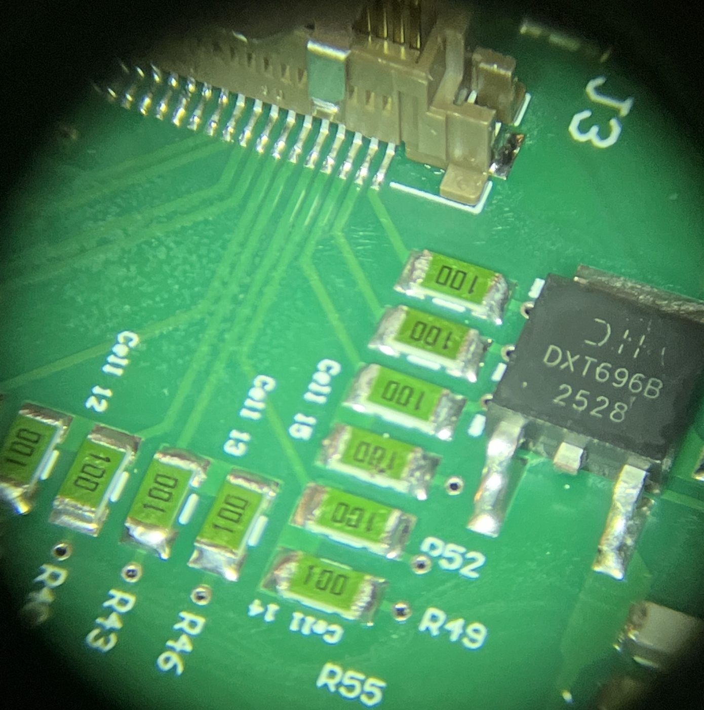

BMS Motherboard Hand Soldering
During our push to get the car running in the winter, we accidentally ordered a solder paste stencil for only one side of the segment BMS motherboard. Rather than wait on a new stencil, I hand-soldered the other side of one board, including dozens of 0402 passives and an ADBMS6830 cell monitor IC, so the team could start testing.
- Tools
- Soldering iron, hot-air rework station, stereo microscope
- Parts
- 0402 capacitors and resistors, ADBMS6830 cell monitor
- Scope
- One board, to unblock testing
- Team
- Virginia Motorsports (UVA Formula SAE EV)
The problem
The BMS motherboard has parts on both sides, but we only ordered a stencil for one. That side could be pasted and reflowed normally. The other side was left bare, and it held most of the small passives along with the ADBMS6830, the main IC that monitors the battery cells.
Passives
I soldered every 0402 capacitor and resistor on that side with a soldering iron, one part at a time.
ADBMS6830
The ADBMS6830 was challenging because of its fine-pitch leads and large solder pad underneath the component. I used hot air to solder the center pad and position the component, then used drag soldering to connect the remaining pins.
Inspection
I inspected every joint under a stereo microscope, checking for solder bridges, cold joints, and components that weren't sitting level before handing the board off for testing.

Outcome
This was a one-time fix to get a single complete board in the team's hands. It bought us a week of testing time by avoiding the wait for a new stencil.